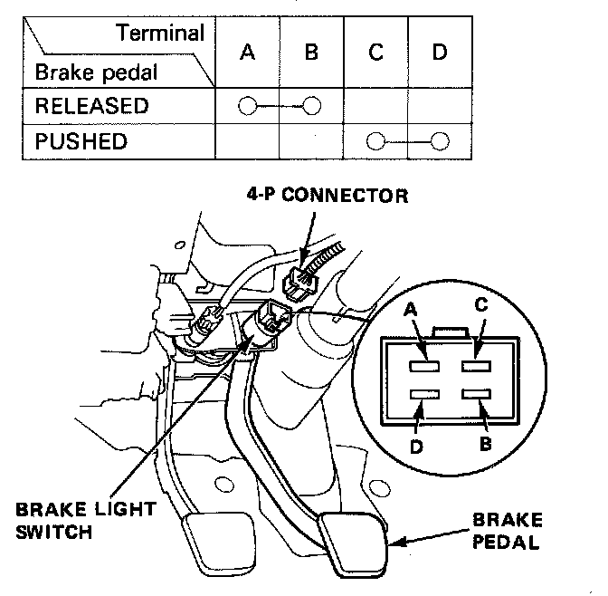

Operation CHARM
: Car repair manuals for everyone.
Home
>>
Acura
>>
1987
>>
Integra L4-1590cc 1.6L DOHC FI
>>
Repair and Diagnosis
>>
Sensors and Switches
>>
Sensors and Switches - Lighting and Horns
>>
Brake Light Switch
>>
Testing and Inspection
>>
With Cruise Control
With Cruise Control

Brake Switch
1.
Disconnect the 4-P connector from the switch.
2.
Check for continuity between the terminals according to the table.
Note:
If necessary, replace the switch or adjust the pedal height.